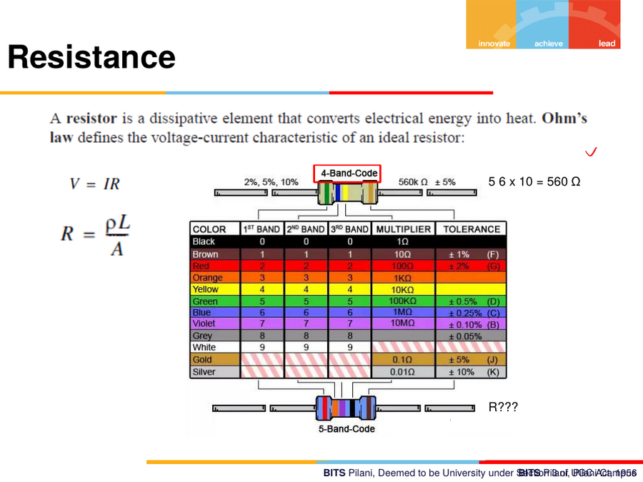
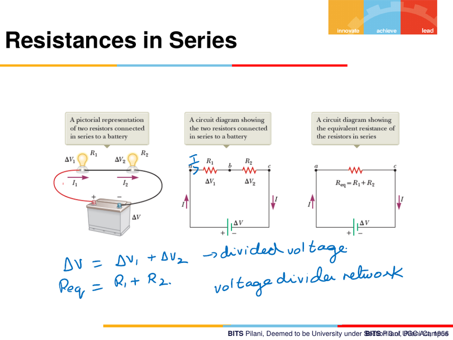
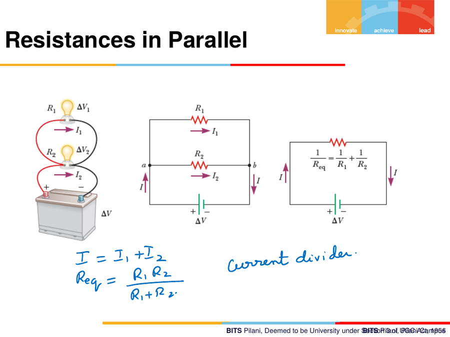
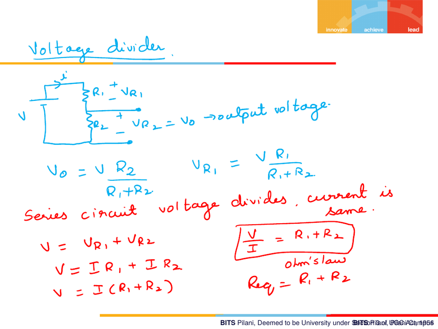
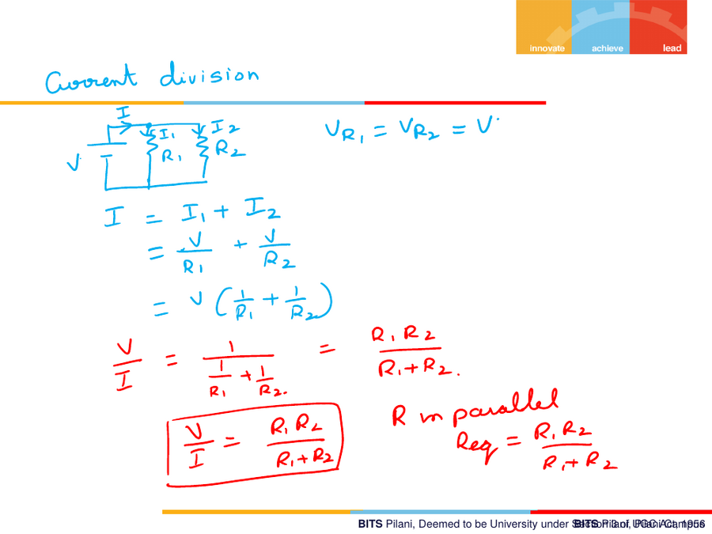
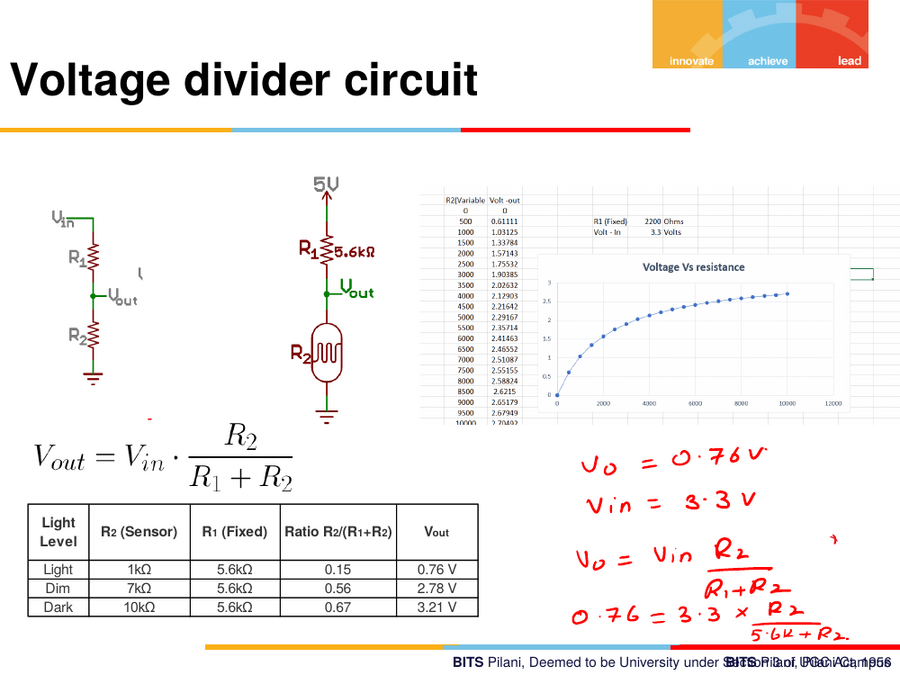
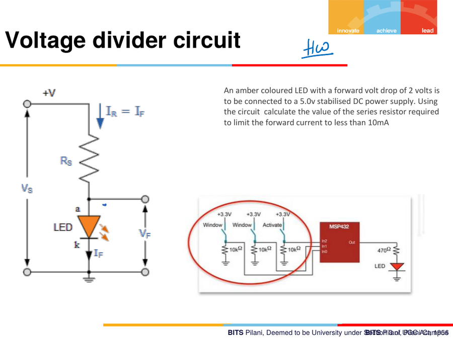
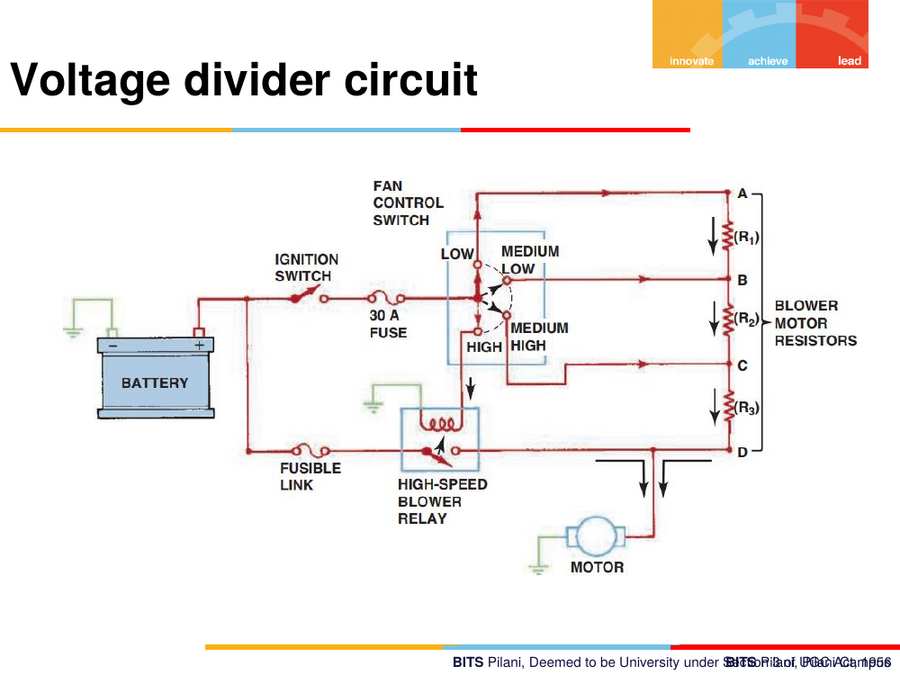

4. Resistors & Resistor Networks
4.1 Resistor basics
A resistor is a dissipative element that converts electrical energy into heat. Ohm's Law defines its V–I characteristic:
V = IR
R = ÏL / A
Ï(rho) = specific resistivity of the materialL= length,A= cross-sectional area
Resistor colour code
4-band and 5-band resistor colour codes are used to read off resistance
value + tolerance. Worked example on the slide: bands Green (5), Blue
(6), Red (×100) → 5 6 × 10² = 5600 Ω (also written as 56 × 10 = 560 Ω
in the simpler annotation — check the physical resistor's actual band
count/colour against the chart below).
| Colour | Digit | Multiplier | Tolerance |
|---|---|---|---|
| Black | 0 | ×1 | — |
| Brown | 1 | ×10 | ±1% (F) |
| Red | 2 | ×100 | ±2% (G) |
| Orange | 3 | ×1k | — |
| Yellow | 4 | ×10k | — |
| Green | 5 | ×100k | ±0.5% (D) |
| Blue | 6 | ×1M | ±0.25% (C) |
| Violet | 7 | ×10M | ±0.1% (B) |
| Grey | 8 | — | ±0.05% |
| White | 9 | — | — |
| Gold | — | ×0.1 | ±5% (J) |
| Silver | — | ×0.01 | ±10% (K) |

4.2 Resistors in Series — the Voltage Divider
When resistors are connected in series to a battery:
- Same current flows through both.
- Voltage divides:
ΔV = ΔV₠+ ΔV₂ - Equivalent resistance:
R_eq = Râ‚ + Râ‚‚
This is called a voltage divider network — you can chain as many resistors as needed to split a total voltage into whatever proportions you want.

General voltage divider formula
V_out = V_in · R₂ / (R₠+ R₂)
Also written per-resistor: V_R1 = V·Râ‚/(Râ‚+Râ‚‚), and Ohm's-law form
V/I = Râ‚ + Râ‚‚ = R_eq.
4.3 Resistors in Parallel — the Current Divider
When resistors are connected in parallel:
- Same voltage appears across both:
V_R1 = V_R2 = V - Total current divides:
I = Iâ‚ + Iâ‚‚ - Equivalent resistance:
1/R_eq = 1/Râ‚ + 1/Râ‚‚, i.e.R_eq = Râ‚Râ‚‚ / (Râ‚ + Râ‚‚)
This is called a current divider network.

Current-division derivation (from class)
I = Iâ‚ + Iâ‚‚ = V/Râ‚ + V/Râ‚‚ = V(1/Râ‚ + 1/Râ‚‚)
V/I = 1 / (1/Râ‚ + 1/Râ‚‚) = Râ‚Râ‚‚/(Râ‚+Râ‚‚) ↠this is R_eq for parallel R


4.4 Voltage divider circuit — worked light-sensor example
A light-dependent resistor (LDR) used as R2 (sensor) in series with a
fixed R1 = 5.6 kΩ, forming a light-level detector:
| Light Level | R2 (Sensor) | R1 (Fixed) | Ratio R2/(R1+R2) | Vout |
|---|---|---|---|---|
| Light | 1 kΩ | 5.6 kΩ | 0.15 | 0.76 V |
| Dim | 7 kΩ | 5.6 kΩ | 0.56 | 2.78 V |
| Dark | 10 kΩ | 5.6 kΩ | 0.67 | 3.21 V |
Physical intuition (from class): resistance is the opposition to
current flow. As it gets darker, the LDR's resistance increases, and
(because it's on the numerator side of this particular divider) V_out
increases too. This exact voltage-divider pattern is the working principle
behind the Throttle Position Sensor (TPS) — a potentiometer is nothing
but a voltage divider with a moving wiper.

LED series-resistor design problem (homework style)
An amber LED with forward voltage drop
V_F = 2 Vis connected to a5.0 Vstabilised DC supply. Find the series resistorR_Sneeded to limit forward current to under 10 mA.
Set-up: I_R = I_F (same current through R and LED, series circuit).
Using V_S = I_F·R_S + V_F ⇒ solve for R_S given I_F < 10 mA.
(Board annotation for a related divider example: V_O = 0.76 V,
V_in = 3.3 V, ratio R2/(R1+R2) — used in the context of a
capacitive-touch / window-switch MCU circuit shown alongside.)

Real automotive application — blower motor resistor pack
A classic series resistor network as a fan-speed selector: the blower motor's Low/Medium/High speeds are selected by routing battery current through different combinations of resistors (R1, R2, R3) before the motor, using a fan control switch. Fewer resistors in the path ⇒ less voltage drop ⇒ higher motor speed.

4.5 Series vs Parallel — quick summary
| Series | Parallel | |
|---|---|---|
| What's equal | Current | Voltage |
| What divides | Voltage | Current |
| Name | Voltage divider | Current divider |
| R_eq | Râ‚ + Râ‚‚ | Râ‚Râ‚‚/(Râ‚+Râ‚‚) |